- 00000018WIA30E5A230GYZ
- id_156674921.23
- Nov 1, 2021 8:31:23 PM
IRD Troubleshooting
| Notice | |
|---|---|
| Notice | |
|---|---|
Overview
This document describes the possible solutions for the following IRD error conditions.
-
Touch Panel does not work
-
IRD does not display UI image
FRU components for this troubleshooting
The followings are main components around IRD
| Quality Improved IRD Parts introduction in Q3, 2017 | |||
| Description | Old FRU Number | New Part Number | New FRU Number |
| IRD | 5502140 | 5502140-2 | 5502140-2 |
| HDMI Splitter | 5543121 | 5543121-2 | 5543121-2 |
| USB3.0 CBL (E2027) | 5501806 | 5771818 (Not FRU) | 5780439 (*) |
| USB3.0 CBL (M2027) | 5501807 | 5771819 (Not FRU) | |
| USB3.0 CBL (E2029) | 5501806-2 | 5771818-2 (Not FRU) | 5780439-2 (*) |
| USB3.0 CBL (M2029) | 5501807-2 | 5771819-2 (Not FRU) | |
| HDMI CBL (E2026) | 5492390-3 | 5778279 (Not FRU) | 5780438 (*) |
| HDMI CBL (M2026) | 5475889 | 5778281 (Not FRU) | |
| HDMI CBL (E2028) | 5492390-4 | 5778279-2(Not FRU) | 5780438-2 (*) |
| HDMI CBL (M2028) | 5475889-2 | 5778281-2(Not FRU) | |
| Others | |||
| Description | FRU | ||
| PHPS2 | 5167111-51 (For PX25.0) / 5167111-52 (For PX26.0 and PX26.1) | ||
| DCPS for IRD | 6859114-2 | ||
| Host PC | 5922000 (HP Z420) / 8770011-21 (Dell T5810) | ||
| Monitor for Host PC | 5430786–2 | ||
| Copper Video Cable | 5502025, 5339070 | ||
Block Diagram
Single-cable F/O cables should be routed through the waveguide at the ISC Penetration Wall (Standard Siting) or Penetration Panel (Remote Siting).
Two-cable F/O cables should be connected on each side of the ICC Penetration Wall (Standard Siting) or Penetration Panel (Remote Siting).
The following block diagrams are used in the theory of troubleshooting throughout this document.
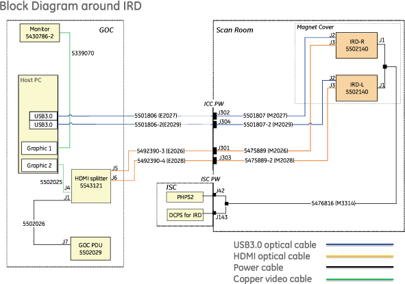
Parts in red are new numbers after Q3, 2017. Other than these, part numbers are the same shown in Illustration 1.
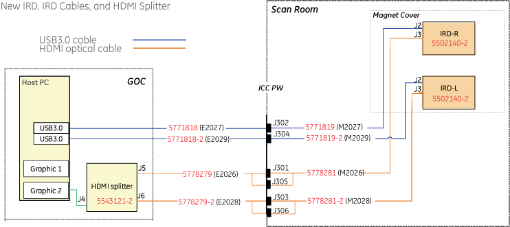
IRD Troubleshooting
This document describes error conditions for the IRD and possible solutions for those conditions.
| For This error: | Follow these steps: |
|---|---|
| Touch Panel does not work | Refer to Touch Panel does not work |
| IRD does not display UI image | Refer to IRD does not display UI image |
Troubleshooting flowcharts in this manual are colored as following Table for visibility. Note that Flow Box with Shadow has hyper link to show detail information.
| Color | Meaning |
|---|---|
| Green | Error Condition |
| Red | Fault Isolation |
| Blue | Action |
Touch Panel does not work
Overview: Touch Panel does not work on IRD. Check IRD, USB line, and Host PC.
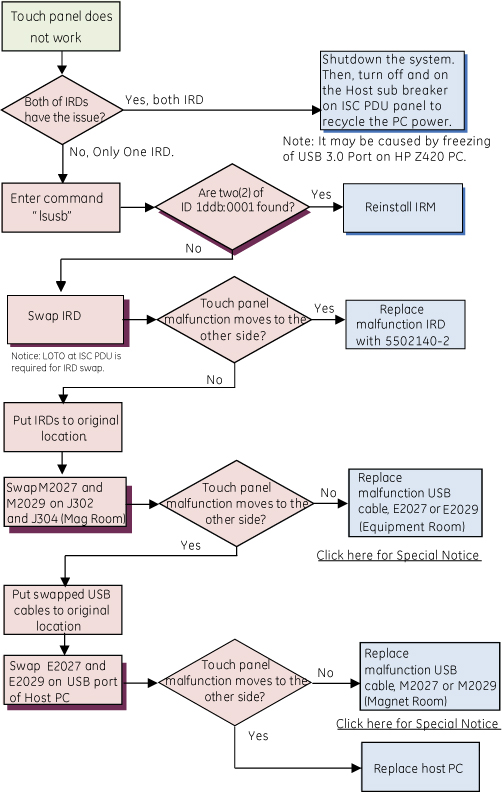
IRD does not display UI image
Overview: IRD does not display UI image. Check IRD, HDMI line, and Host PC.
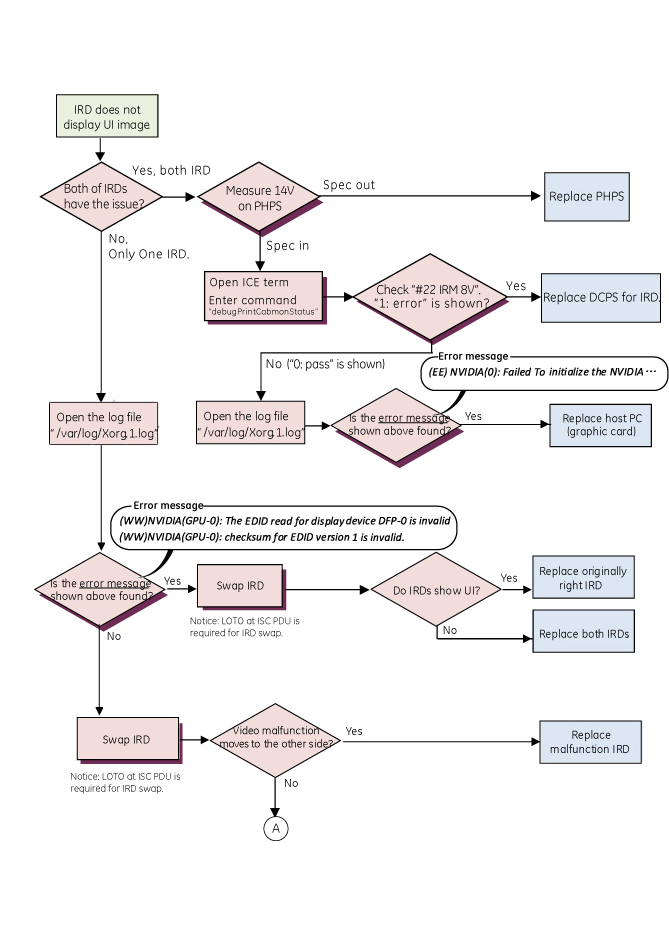
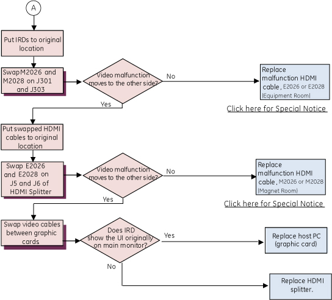
Finalization
-
Verify all system interconnects are returned to normal configurations.
-
Run the Check scan.
Reference : Backmatter of IRD Troubleshooting
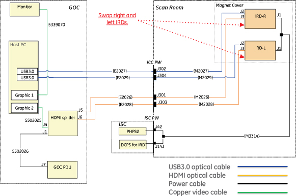
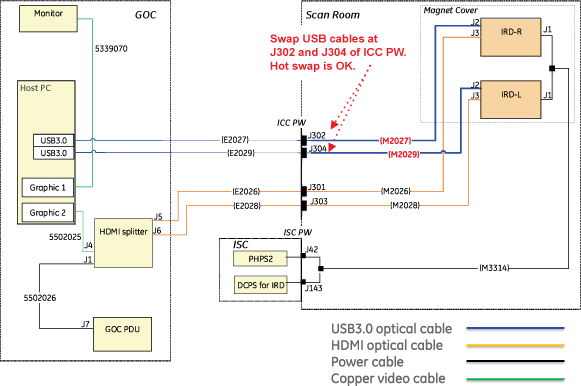
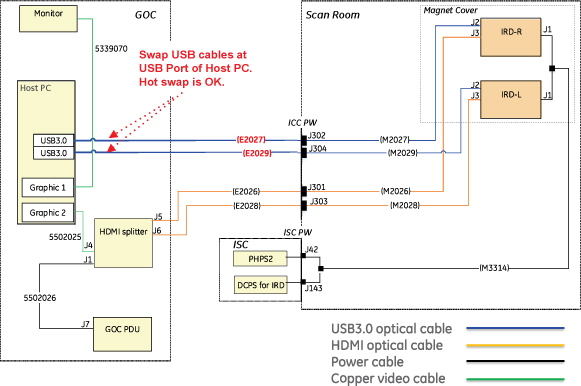
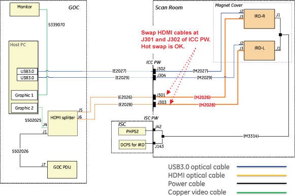
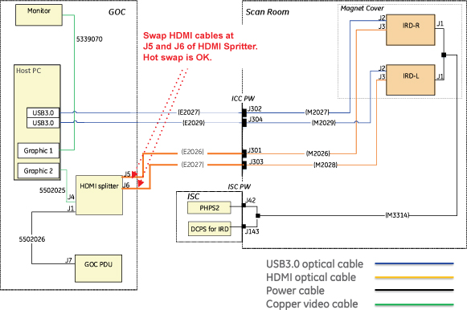
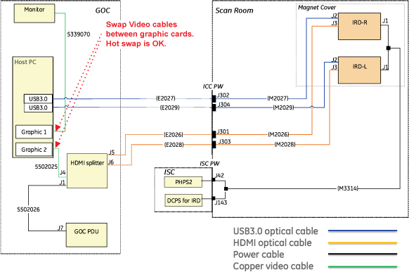
Open Guided Install, select IRM Installation, and then click [Install IRM Software] to install IRM software.
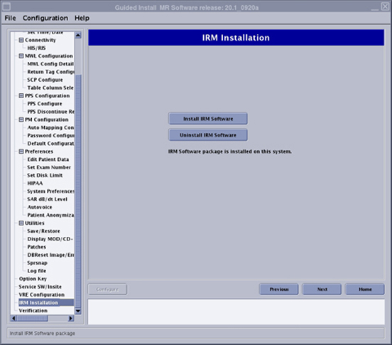
Example of error message
The following is the example of the error message in Xorg.1.log.
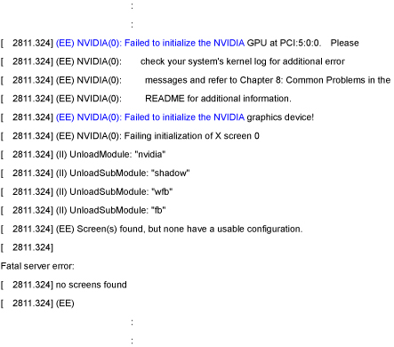
Example of error message
The following is the example of the error message in Xorg.1.log.
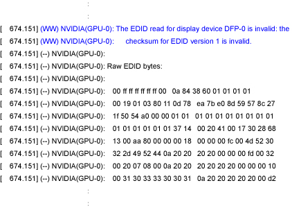
Enter “debugPrintCabmon” in ICE Term
Refer to Running ice_term to open ice_term window
Enter debugPrintCabmonStatus.

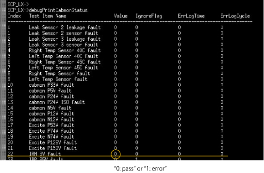
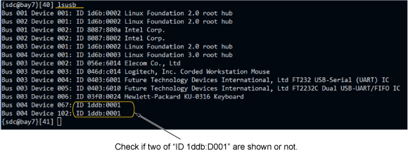
Check SRI14V on PHPS Front Panel is in spec. (Spec: 13.3~14.7VDC)
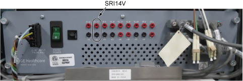
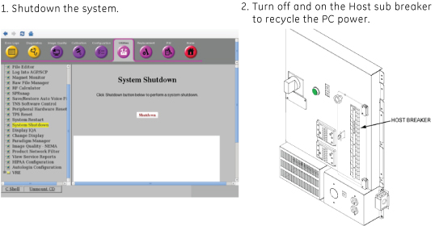
Attention of Cable Replacement
Attention of Cable Replacement:
For USB Cable and HDMI Cable, there is compatibility between equipment room cable and magnet room cable. In addition to that, new HDMI cable has compatibility with HDMI splitter. See Tables below for the compatible combination.
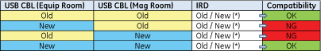
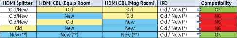
(**): If HDMI cables are new, always use the new HDMI splitter per compatibility.
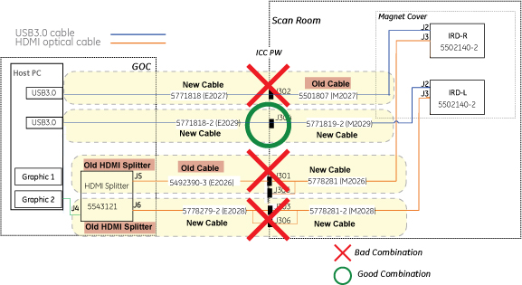
How to identify the new parts:
-
HDMI optical cables and USB3.0 Cables
Appearance of new cables is different from the old cables. It is possible to identify the part with appearance other than part number on the label.
Figure 20. Appearance of the cables 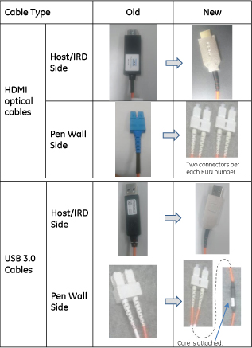
-
IRD
Type the following command. Then, IRD part number will be shown whether “5502140” or “5502140-2”.
> map_onewire -v [Enter]Figure 21. Example of result for the command 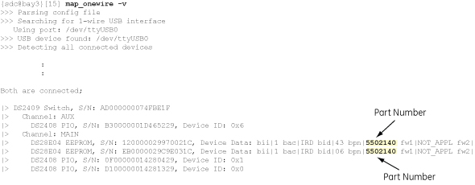
Note IRD location (Left or Right facing from the patient table side) can be identified by “S/N” shown before the part number. See illustration above. Read the last 4 digit of the Serial Number. The number 02 or 03 represents the location of IRD as follows.-
02##=Left IRD
-
03##=Right IRD
-
-
HDMI Splitter
Open GOC Service Cover and identify the part number (5543121 or 5543121-2) on the HDMI Splitter label.
Figure 22. HDMI Splitter Part Label 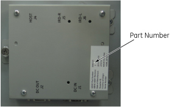